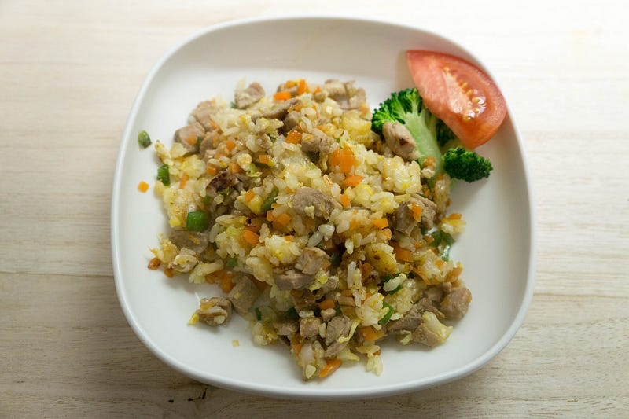

残った低温調理豚ヒレで炒飯
残った低温調理豚ヒレで炒飯
昨日昼に作ったチャーシューが残ってたので夕飯は炒飯です。anovaで低温調理した豚肉、こういう残り物で作る時に違いがはっきりでてくる。やわらかくてうまい。

昨日作った豚ヒレチャーシューもどきはこちら
本エントリはこれだけで終えようかと思いましたが、一応昨日の炒飯の作り方。「昨日の」とつくのは、毎回同じモノは作れないからです。
ニンジン、ピーマン、長ネギをみじん切りに。火の通りにくいものから順に炒めていき、良い感じになったら肉と合わせて軽く炒める。肉は5mm角くらいの大きさに揃える。
冷蔵庫に1日放置されて良い感じに乾き始めたご飯をほぐして、軽く油になじませる。フライパンで焦げないように、しかし掻き回しすぎないように火を通す。ある程度まで油がまわってきたら、溶き卵をぶっかけて炒め続ける。
中華出汁的なものをぶっかける。
ユウキ 減塩ガラスープ 110g
ユウキ 減塩ガラスープ 110gが中華だしストアでいつでもお買い得。当日お急ぎ便対象商品は、当日お届け可能です。アマゾン配送商品は、通常配送無料（一部除く）。amzn.to
ユウキ 減塩ガラスープ 110gが中華だしストアでいつでもお買い得。当日お急ぎ便対象商品は、当日お届け可能です。アマゾン配送商品は、通常配送無料（一部除く）。amzn.to
塩を適用。炒め続けて良い感じになったら醤油を一回ししてさらに炒める。野菜と肉を数回にわけて混ぜながら炒める。以上。
とても美味しかったです。（そしてこれでもまだ豚ヒレを使い切れなかったので、冷凍した）
Anova色々使えるので本当おすすめ。そろそろAnova社からAnova大使任命してほしい。
New: Anova Precision Cooker - WIFI 2nd Gen (900 Watts)
New: Anova Precision Cooker - WIFI 2nd Gen (900 Watts)が卓上IHクッキングヒーターストアでいつでもお買い得。当日お急ぎ便対象商品は、当日お届け可能です。アマゾン配送商品は、通常配送無…amzn.to
New: Anova Precision Cooker - WIFI 2nd Gen (900 Watts)が卓上IHクッキングヒーターストアでいつでもお買い得。当日お急ぎ便対象商品は、当日お届け可能です。アマゾン配送商品は、通常配送無…amzn.to
ところでAmazonでも豚ヒレブロック買えるみたいだけど、普通に地元の卸売り的なスーパーに行くんだ。半額で買えるぞ。